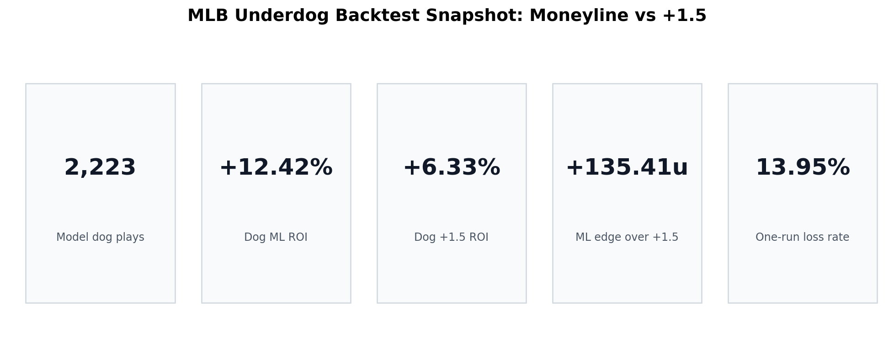
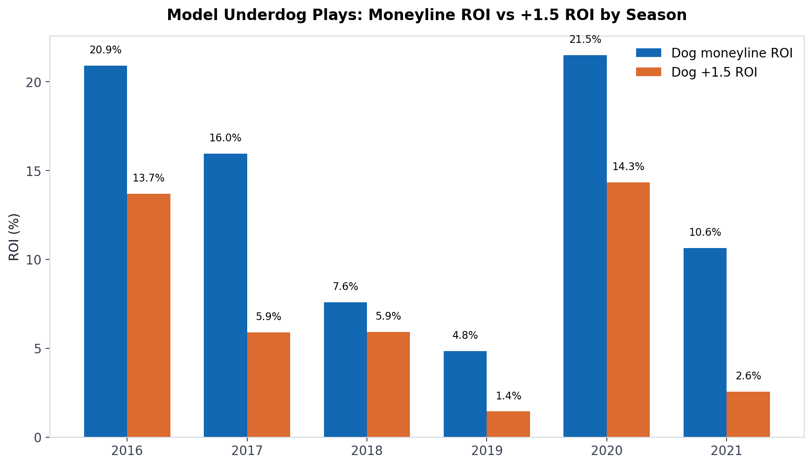
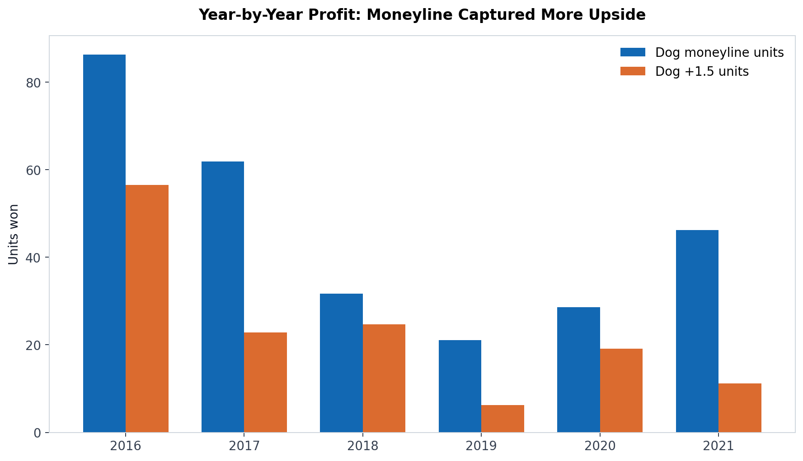
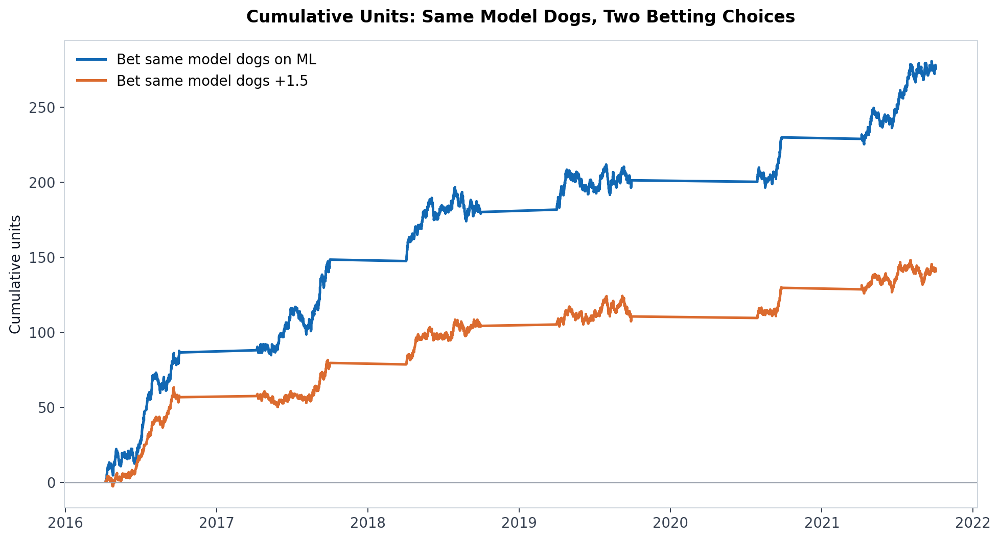
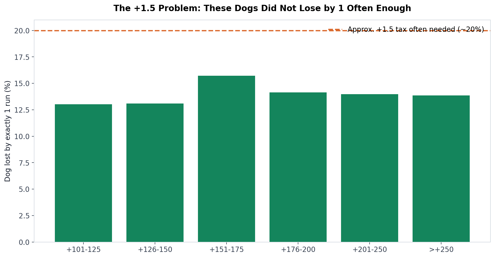
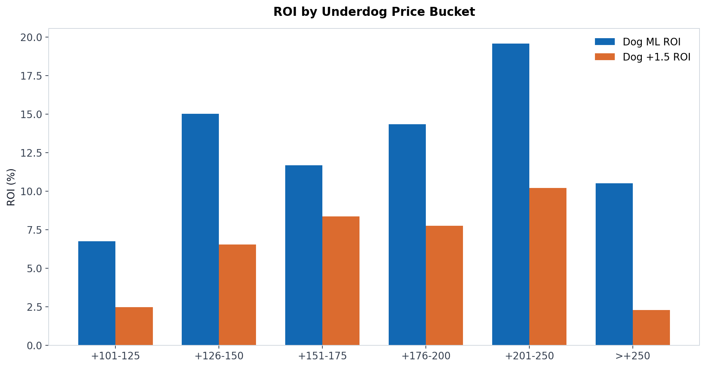
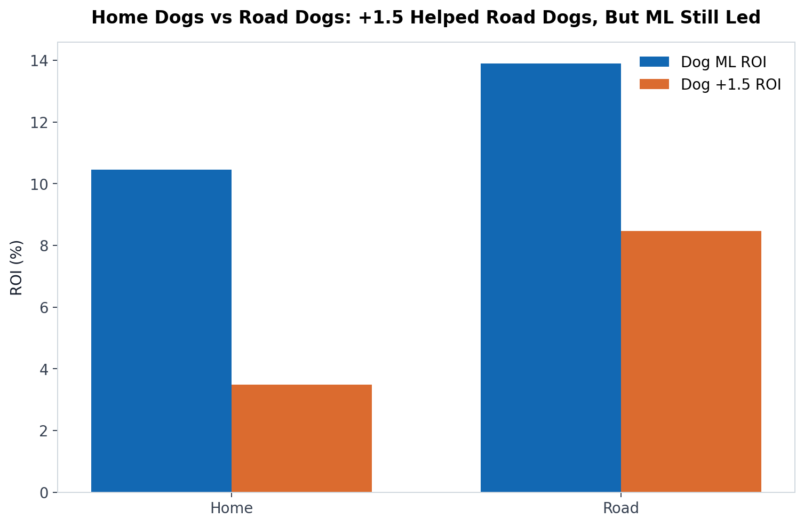

Bet
BetIf you bet baseball underdogs, you eventually run into the same question:
Should I take the Major League Baseball underdog on the money line, or should I protect myself with the underdog +1.5 run line?
It feels like a simple choice. The moneyline gives you the bigger payout. The +1.5 gives you an extra run. Since baseball has so many close games, taking the run sounds smart. It feels disciplined. It feels safer.
But betting markets are not built around feelings. They are built around price.
That is where this gets interesting.
We backtested 2,223 verified MLB model underdog plays from 2016 through 2021 and graded the same games two ways:
- Bet the selected underdog on the moneyline.
- Bet the same selected underdog at +1.5 runs.
Same teams. Same games. Same model-play sample. Different bet type.
The result was not close.

Quick Answer: In This Major League Baseball Backtest, Money Line Beat +1.5
Across the full sample of 2,223 true underdog model plays, the underdog moneyline produced:
| Bet Type | Bets | Units Won | ROI | Win/Cover Rate |
|---|---|---|---|---|
| MLB Underdog Moneyline | 2,223 | +276.02u | +12.42% | 44.04% |
| MLB Underdog +1.5 Run Line | 2,223 | +140.61u | +6.33% | 57.98% |
The underdog +1.5 cashed more often. That part is expected.
But the moneyline made +135.41 more units.
That is the whole lesson in one sentence: the +1.5 run line won more tickets, but the moneyline won more money.
For underdog bettors, this matters because a lot of people confuse hit rate with edge. In baseball, that mistake can get expensive. A +1.5 ticket will feel better emotionally because it saves you when the dog loses by one run. But if you are consistently paying too much for that protection, the safer-looking bet can become the lower-return bet.
The Core Math: The +1.5 Only Adds One Outcome
When you compare an MLB underdog moneyline to an MLB underdog +1.5 run line, the +1.5 does not create a bunch of new paths to profit. It creates exactly one extra winning outcome:
1.5 wins when:
- The underdog wins outright
- The underdog loses by exactly 1 run
Moneyline wins when:
- The underdog wins outrightSo the entire comparison comes down to this:
Is the extra one-run-loss protection worth the worse payout?In this backtest, the answer was mostly no.
The underdogs in the sample lost by exactly one run only 13.95% of the time.
That is a huge finding because normal sportsbook pricing often charges you as if that extra run is worth something closer to the high teens or around 20 percentage points of probability.
If the book is charging you for 19% to 21% worth of protection, but your actual one-run-loss rate is only 13.95%, you are overpaying for the run.
That is why the moneyline won.
Backtest Methodology
This was not a generic "bet every underdog on the board" test.
That would be a weak test because no serious bettor is firing every dog every day. The better question is:
If a model already likes an MLB underdog, should the bettor express that opinion through the moneyline or through +1.5?
So the backtest used model-selected underdog plays only.
Data Used
The test used local historical MLB betting files and replay logs:
| Data Source | Purpose |
|---|---|
run_line_full_pick_log_2016_2021_extended.csv | Model-selected run-line plays |
mlb-odds-2016.xlsx through mlb-odds-2021.xlsx | Closing moneyline and run-line prices |
| Final game scores | Grading ML and +1.5 outcomes |
The sample was filtered to true underdogs only, meaning the selected team had a closing moneyline greater than +100.
Bet Grading
Each qualified model underdog play was graded twice:
| Version | Bet |
|---|---|
| Version A | Risk 1 unit on the underdog moneyline |
| Version B | Risk 1 unit on the same underdog +1.5 |
For example:
Team: Pirates
Moneyline: +145
Run line: +1.5 -155
Final score: Pirates lose 4-3The grading:
Moneyline: loss, -1.00u
+1.5: win, +0.65uBut if the Pirates win outright:
Moneyline: win, +1.45u
+1.5: win, +0.65uThat is the tradeoff. The +1.5 saves the one-run losses. The moneyline pays much better on outright wins.
Year-by-Year Results
The moneyline beat +1.5 in every season tested.

| Season | Bets | Dog ML Units | Dog ML ROI | Dog +1.5 Units | Dog +1.5 ROI | ML Advantage |
|---|---|---|---|---|---|---|
| 2016 | 413 | +86.39u | +20.92% | +56.59u | +13.70% | +29.80u |
| 2017 | 388 | +61.90u | +15.95% | +22.83u | +5.88% | +39.07u |
| 2018 | 418 | +31.71u | +7.59% | +24.69u | +5.91% | +7.02u |
| 2019 | 436 | +21.13u | +4.85% | +6.27u | +1.44% | +14.86u |
| 2020 | 133 | +28.61u | +21.51% | +19.08u | +14.35% | +9.53u |
| 2021 | 435 | +46.28u | +10.64% | +11.15u | +2.56% | +35.13u |
There is a useful detail here: +1.5 was not bad in the aggregate. It was profitable in every year. But it was consistently less profitable than simply betting the same underdogs on the moneyline.
That distinction matters. This is not an article saying the underdog +1.5 run line is useless. It is saying that when your model is already finding valuable underdogs, the market may be charging too much for the extra run.

The 2021 One-Year Backtest
Since bettors often ask for a "one-year backtest," here is the clean 2021-only sample.
| Bet Type | Bets | Units Won | ROI | Win/Cover Rate |
|---|---|---|---|---|
| Dog Moneyline | 435 | +46.28u | +10.64% | 43.45% |
| Dog +1.5 | 435 | +11.15u | +2.56% | 56.09% |
In 2021, the underdog +1.5 cover rate was more than 12 percentage points higher than the moneyline win rate.
That sounds good until you look at profit.
The moneyline still beat +1.5 by +35.13 units.
Why? Because when those underdogs won, the moneyline got paid like an underdog bet. The +1.5 often got paid like a juiced favorite or a short plus-price bet.
The higher cover rate did not make up for the lower payout.
The Equity Curve: Same Dogs, Different Bet Type
The most honest way to visualize the comparison is to show the cumulative unit curve.
Same selected underdogs. Same sequence of plays. Two ways to bet them.

The +1.5 path was smoother in some stretches. That is expected. It loses fewer tickets because one-run losses become wins.
But the moneyline curve separated over time because every outright dog win was worth more.
That is the underdog bettor's bargain:
Accept more losing tickets.
Get paid properly when your read is right.Why the +1.5 Run Line Feels Better Than It Performs
The +1.5 run line is psychologically seductive.
Nobody likes losing a dog moneyline by one run. It feels like you were "right enough." You saw the game correctly. The underdog competed. The market underestimated them. They just did not finish.
So the next time, you think:
I should have taken the run.
Sometimes that is true.
But long term, the question is not whether +1.5 would have saved one painful ticket. The question is whether the one-run saves happen often enough to offset the reduced payout on every outright win.
In this sample:
Dog ML win rate: 44.04%
Dog lost by exactly 1 run: 13.95%
Dog lost by 2+ runs: 42.02%
Dog +1.5 cover rate: 57.98%That means the +1.5 added 13.95 percentage points of cover rate.
But the average price difference was massive:
Average dog ML price: +161
Average dog +1.5 price: -70At +161, a 1-unit moneyline win returns 1.61 units.
At -70, a 1-unit +1.5 win returns about 1.43 units if the line is plus money, but the average hides a wide mix of prices. Many +1.5 bets in shorter dog ranges were heavily juiced, such as -150, -160, or worse.
The core problem is this:
You collect less on every outright win
in exchange for protection that did not trigger enough.The One-Run-Loss Problem
The underdog +1.5 only beats the moneyline if the dog loses by exactly one run often enough.
In this backtest, it did not.

| ML Bucket | Bets | One-Run Loss Rate | +1.5 ROI | ML ROI |
|---|---|---|---|---|
| +101 to +125 | 561 | 13.01% | +2.47% | +6.73% |
| +126 to +150 | 504 | 13.10% | +6.54% | +15.01% |
| +151 to +175 | 509 | 15.72% | +8.36% | +11.68% |
| +176 to +200 | 283 | 14.13% | +7.74% | +14.35% |
| +201 to +250 | 265 | 13.96% | +10.21% | +19.59% |
| Greater than +250 | 101 | 13.86% | +2.27% | +10.51% |
Notice how stable the one-run-loss rate was. It mostly lived around 13% to 16%.
That is below the rough threshold where +1.5 usually needs to live to justify the price.
This is the difference between general baseball trivia and betting math.
People say, "MLB has a lot of one-run games."
True.
But the bet is not "will this game be decided by one run?"
The bet is:
Will my selected underdog lose by exactly one run often enough
to justify the price I am paying for +1.5?Those are not the same question.
Price Bucket Analysis: Where Did Moneyline Beat +1.5?
One of the most important parts of this backtest is the price bucket split.
If +1.5 were going to shine, you might expect it to show up in certain underdog ranges. Maybe small dogs are better on the moneyline, but bigger dogs need the run. Maybe once you get to +200 or longer, +1.5 becomes the superior long-term expression.
That did not happen in this sample.

| Dog ML Price Range | Bets | Dog ML Units | Dog ML ROI | Dog +1.5 Units | Dog +1.5 ROI |
|---|---|---|---|---|---|
| +101 to +125 | 561 | +37.78u | +6.73% | +13.88u | +2.47% |
| +126 to +150 | 504 | +75.64u | +15.01% | +32.95u | +6.54% |
| +151 to +175 | 509 | +59.46u | +11.68% | +42.53u | +8.36% |
| +176 to +200 | 283 | +40.61u | +14.35% | +21.90u | +7.74% |
| +201 to +250 | 265 | +51.91u | +19.59% | +27.05u | +10.21% |
| Greater than +250 | 101 | +10.62u | +10.51% | +2.29u | +2.27% |
The moneyline beat +1.5 in every bucket.
That is a strong result because it means the conclusion was not carried by one weird price range. Small dogs, medium dogs, bigger dogs, and long dogs all favored the moneyline in this model-play sample.
The most interesting bucket was +201 to +250:
Dog ML ROI: +19.59%
Dog +1.5 ROI: +10.21%Many bettors assume bigger underdogs should automatically be played at +1.5. But in this sample, the moneyline still captured more value because the model was selecting dogs with real upset potential, not just teams likely to "keep it close."
That distinction is everything.
Home Dogs vs Road Dogs
Road underdogs are usually more attractive on +1.5 than home underdogs because they are guaranteed to bat in the ninth inning. Home underdogs can lose without batting the bottom of the ninth if they are already trailing after the top half. Also, when home underdogs walk off, they win outright, often by one run, which helps the moneyline just as much as the run line.
The data showed the expected pattern: +1.5 was better for road dogs than home dogs.
But the moneyline still won both splits.

| Split | Bets | Dog ML ROI | Dog +1.5 ROI | One-Run Loss Rate |
|---|---|---|---|---|
| Home Dogs | 957 | +10.46% | +3.49% | 9.82% |
| Road Dogs | 1,266 | +13.90% | +8.47% | 17.06% |
This is one of the more useful practical findings.
Road dogs did lose by exactly one run much more often:
Home dogs one-run loss rate: 9.82%
Road dogs one-run loss rate: 17.06%That means +1.5 has a more logical case on road underdogs.
But even there, the road dog moneyline still produced:
Road dog ML ROI: +13.90%
Road dog +1.5 ROI: +8.47%So the better takeaway is not "never take road dogs +1.5."
The better takeaway is:
Road dogs are the best place to consider +1.5, but the price still has to be right.
Why Moneyline Was Better for These Model Dogs
There are five main reasons the moneyline beat +1.5 in this backtest.
1. The Model Was Finding Upset Candidates, Not Just Close-Loss Candidates
This is the biggest concept.
If your model is good at identifying teams that are undervalued to win the game, the moneyline is usually the purest way to express that opinion.
A +1.5 bet is more appropriate when your read is:
This team may not win, but the game should be tight.A moneyline bet is more appropriate when your read is:
This team is more live to win outright than the market says.The backtest sample came from model plays. Those plays were not random. They were selected because the model saw value.
That matters because the +1.5 run line taxes the upside of the model's best insight: outright upset probability.
2. The One-Run Loss Rate Was Too Low
The full-sample one-run-loss rate was 13.95%.
That extra 13.95% cover rate was not enough to overcome the payout reduction.
In plain English:
The +1.5 did save some tickets.
It just did not save enough tickets.3. Small Dog +1.5 Prices Were Expensive
For short underdogs, +1.5 is often heavily juiced.
In the +101 to +125 moneyline bucket, the average +1.5 price was about -161.
That is expensive.
At -161, you need to cover around 61.7% just to break even.
The +101 to +125 bucket covered +1.5 at 62.92%, barely above break-even. That produced only +2.47% ROI.
Meanwhile, the same teams on the moneyline won 49.91% of the time at an average price of +114, producing +6.73% ROI.
That is a classic example of why hit rate can mislead you.
4. Big Dog +1.5 Did Not Add Enough
For bigger underdogs, +1.5 prices become more attractive. Sometimes the +1.5 may even be plus money.
That should help the run line.
It did help. The +201 to +250 bucket had a +1.5 ROI of +10.21%.
But the moneyline was still better at +19.59%.
Why?
Because the model dogs in that range still won outright enough to make the larger payout matter more than the extra run.
5. Baseball Underdog Betting Is About Payout Efficiency
In sports like the NFL or NBA, point spreads move around key numbers. Baseball's standard run line is almost always 1.5, so the market adjusts mainly through price.
That means the +1.5 is not automatically good or bad. It is just a price.
The bettor's job is not to ask:
Do I want insurance?The bettor's job is to ask:
Is the insurance underpriced or overpriced?In this sample, the insurance was usually overpriced relative to the actual one-run-loss frequency.
What This Means for MLB Betting Strategy
The data supports a clear strategic idea:
If your model identifies an MLB underdog as a positive expected value play, the moneyline may be the better default expression.
Not always. But as a starting point, yes.
The +1.5 should be treated as a separate bet requiring its own edge, not as a safer automatic substitute.
Here is the practical framework.
Prefer the Underdog Moneyline When:
- Your model edge is based on outright win probability.
- The dog is between +110 and +180 and the +1.5 is heavily juiced.
- The dog has enough offensive ceiling to win, not just hang around.
- You are betting a portfolio and can tolerate variance.
- The +1.5 price implies too much one-run-loss protection.
Consider +1.5 When:
- The dog is on the road.
- The total is low.
- Both bullpens are strong enough to keep the game tight.
- The favorite's offense is not explosive.
- The +1.5 price is fair, ideally not heavily juiced.
- Your projection says the dog loses by exactly one run at a meaningfully higher rate than the market implies.
Be Careful With +1.5 When:
- The +1.5 price is -160, -180, or worse.
- You are taking +1.5 only because you are afraid of losing by one.
- The dog is a home team with limited ninth-inning protection.
- The game total is high.
- Your model likes the underdog to win outright.
A Simple Rule of Thumb
Here is the clean way to compare the two bets.
Look at the break-even probability of the moneyline.
Then look at the break-even probability of +1.5.
The difference is roughly the one-run-loss rate you need to justify taking the run.
Example:
Dog ML: +150
Dog +1.5: -150Break-even on +150:
100 / (150 + 100) = 40.00%Break-even on -150:
150 / (150 + 100) = 60.00%Difference:
60.00% - 40.00% = 20.00%That means the +1.5 needs the dog to lose by exactly one run around 20% of the time to justify the move from ML to run line.
In our full sample, these model dogs lost by exactly one run only 13.95% of the time.
That is why the moneyline won.
The Big Mistake: Saying "+1.5 Is Safer"
The +1.5 is safer only in one narrow sense: it cashes more often.
But safety in betting is not just about win rate. Safety also includes:
- Price paid
- Expected value
- Long-term ROI
- Bankroll growth
- Opportunity cost
- Market efficiency
If you cash 58% of +1.5 bets but the price requires 60%, you are not safer. You are just losing more slowly with a better emotional experience.
In this backtest, +1.5 did win money, but it still underperformed the moneyline. That makes the lesson sharper:
A bet can be profitable and still be the inferior way to express the same opinion.
That is exactly what happened here.
What About Variance?
The main argument for +1.5 is variance reduction.
That argument has merit.
If two strategies have similar expected value, a bettor might rationally choose the smoother path. A lower-variance strategy can be easier to execute mentally and can reduce drawdowns.
But in this test, the tradeoff was not close enough.
The moneyline produced:
+276.02 unitsThe +1.5 produced:
+140.61 unitsThat is a difference of:
+135.41 unitsYou would need a very strong preference for lower variance to justify giving up that much profit.
And remember, the +1.5 was not always cheap. Many +1.5 bets were priced like favorites. That means you are often combining lower payout with still-meaningful downside.
Is This Universal for Every MLB Underdog?
No.
This backtest does not prove that every underdog should be played on the moneyline. It proves something more specific and more useful:
For this sample of model-selected true MLB underdogs from 2016-2021, the moneyline was the superior long-term bet compared with taking the same teams +1.5.
There will absolutely be individual games where +1.5 is better.
There will be underdogs where the win probability is not quite strong enough, but the close-game probability is underpriced.
There will be low-total road dogs where +1.5 makes sense.
There will be cases where the +1.5 price is unusually soft.
But the default assumption should not be:
Baseball has close games, so take +1.5.The better assumption is:
If I like the underdog to win, the moneyline deserves first look.
If I like the underdog to keep it close, +1.5 deserves a separate price check.Best Long-Tail Keyword Answer: Is It Better to Bet MLB Underdogs Moneyline or +1.5?
Based on this backtest, it was better to bet MLB underdogs on the moneyline when the underdogs were model-selected value plays.
The underdog moneyline returned +12.42% ROI, while the same underdogs at +1.5 returned +6.33% ROI.
The reason was simple: the dogs did not lose by exactly one run often enough to justify the reduced payout on +1.5. The +1.5 increased the cover rate from 44.04% to 57.98%, but the extra cover rate came at too high a price.
So the best answer is:
If your handicap says the underdog is live to win outright, take the moneyline unless the +1.5 price is clearly mispriced.
FAQ
Is betting MLB underdogs profitable long term?
Betting every MLB underdog blindly is not a real strategy. But model-selected underdogs can be profitable if the model finds teams with higher outright win probability than the market implies. In this backtest, true underdog model plays produced +276.02 units on the moneyline across 2,223 bets.
Is +1.5 better than moneyline in baseball?
Not automatically. The +1.5 run line cashes more often, but it pays less. In this backtest, +1.5 covered 57.98% of the time but returned only +6.33% ROI, while the moneyline won 44.04% of the time and returned +12.42% ROI.
Why do MLB bettors take underdogs +1.5?
Bettors take +1.5 because it wins if the underdog wins outright or loses by one run. It is popular because MLB has many close games. The danger is that sportsbooks know this and often charge heavy juice for the extra run.
When is MLB +1.5 worth betting?
MLB +1.5 is most worth considering on road underdogs, low-total games, strong bullpen matchups, and situations where the +1.5 price is not heavily juiced. It is not enough to say the game should be close; the one-run-loss probability has to be high enough to justify the price.
Why did the moneyline beat +1.5 in this backtest?
The moneyline beat +1.5 because the selected underdogs won outright often enough, and their one-run-loss rate was only 13.95%. The +1.5 protection did not trigger enough to overcome the lower payout.
Should I always bet MLB underdogs on the moneyline?
No. The moneyline should be the default if your edge is based on win probability. But +1.5 can be better when your edge is specifically about the underdog keeping the game within one run and the sportsbook is offering a fair price.
Final Takeaway
The underdog +1.5 run line is not a magic baseball betting shortcut.
It wins more often. It feels better. It saves some painful one-run losses.
But if you are betting underdogs because your model believes they are undervalued to win outright, the moneyline may be the better long-term expression.
In this backtest:
Sample: 2,223 true MLB model underdog plays
Dog ML result: +276.02 units, +12.42% ROI
Dog +1.5 result: +140.61 units, +6.33% ROI
Moneyline advantage: +135.41 unitsThe lesson is not that +1.5 is bad.
The lesson is sharper:
Do not pay premium prices for protection unless your numbers prove the protection is underpriced.
For this sample, the numbers did not.
The dogs were better straight up.